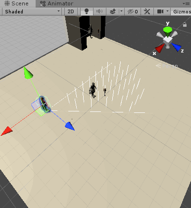
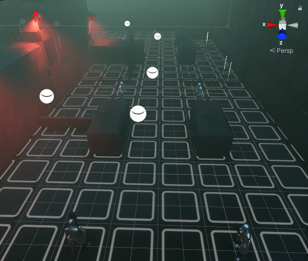

Game Turns
Both the player and the enemies had to take turns for their actions. What made it more difficult, for enemies in particular, is that we had to track whether
they are out of energy for the action they want, and if they are, what should happen next? Furthermore, the turns became very long because the enemies
were taking time for every action they do, and considering we have many enemies split all around the map, waiting for their turns became problematic.
Consequently, I made them do their actions quicker if they are out of the camera's sight by tracking if they are projected into the camera's FOV and raycast
if they are.
Enemy field of view

We decided that the game will feel better if the enemies see only certain tiles rather than the are in front of them. Owing to that, we had to simulate
a vision cone onto the tiles. Unfortunately, a simple cone didn't achieve what we desired so we went for a more complex method by researching how our vision works.
The result is presented in the GIF on the right. One solution to create that shape is to use an ellipse and a triangle to form it. I implemented it, but because I couldn't
rotate the ellipse I thought of using inverse rotation in the algorithm. I thought of this idea thanks to the ray-tracer I implemented an year before that. In it, I
used an inverse matrix in order to inverse the transform that should apply to a bounding box and instead use inverse transformation on the rays.
Enemy pathfinding

Our game included enemies that had to run away from the player. I had to implement Dijkstra’s Algorithm in order to make the enemies find the best tile which the
player wouldn't be able to shoot at. The algorithm checked whether there are obstacles between the player and the tile that would stop the player's attack. Furthermore,
it compared the distance from the player to the tile and how much energy it will cost to get there. By doing so, the enemy could decide which tile is the furthest away
from the player and is behind an obstacle. The image on the right presents where the enemies would've gone if they had to run away from the player(the white lines).
Enemy stances

The AI used FSM as mentioned above. I implemented different stances such as Idle, Observe, Runaway, Attack, Patrol, etc. I will give an example for how the Patrol stance
was implemented. I used an array of waypoints and made the enemies change their stance to Attack on the condition that they see a player while patrolling. They will
walk to the next waypoint using pathfinding, until they run out of energy. The patrolling will be immediate if the next tile that they are going to step on is not visible
to the camera(considering the height of the enemy).